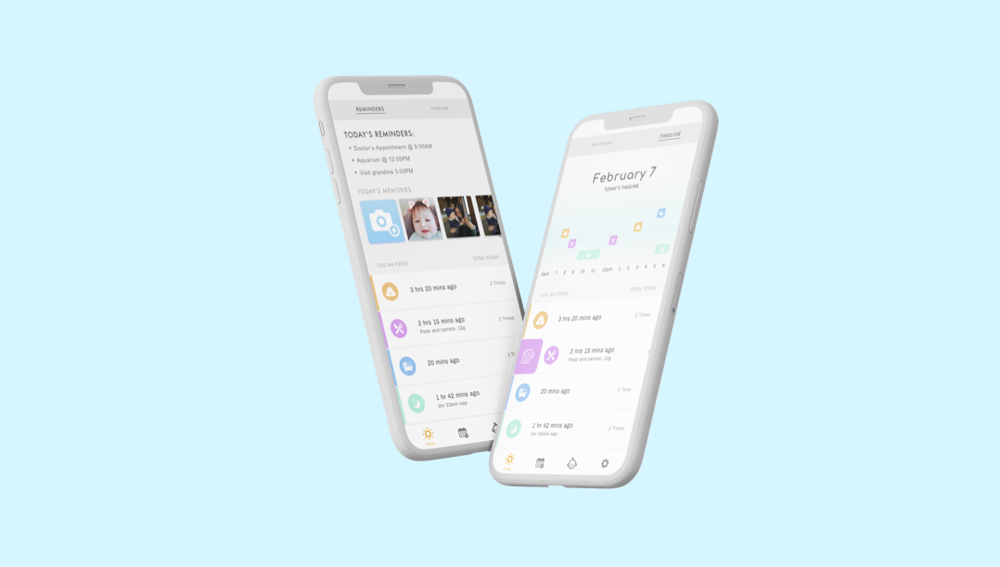
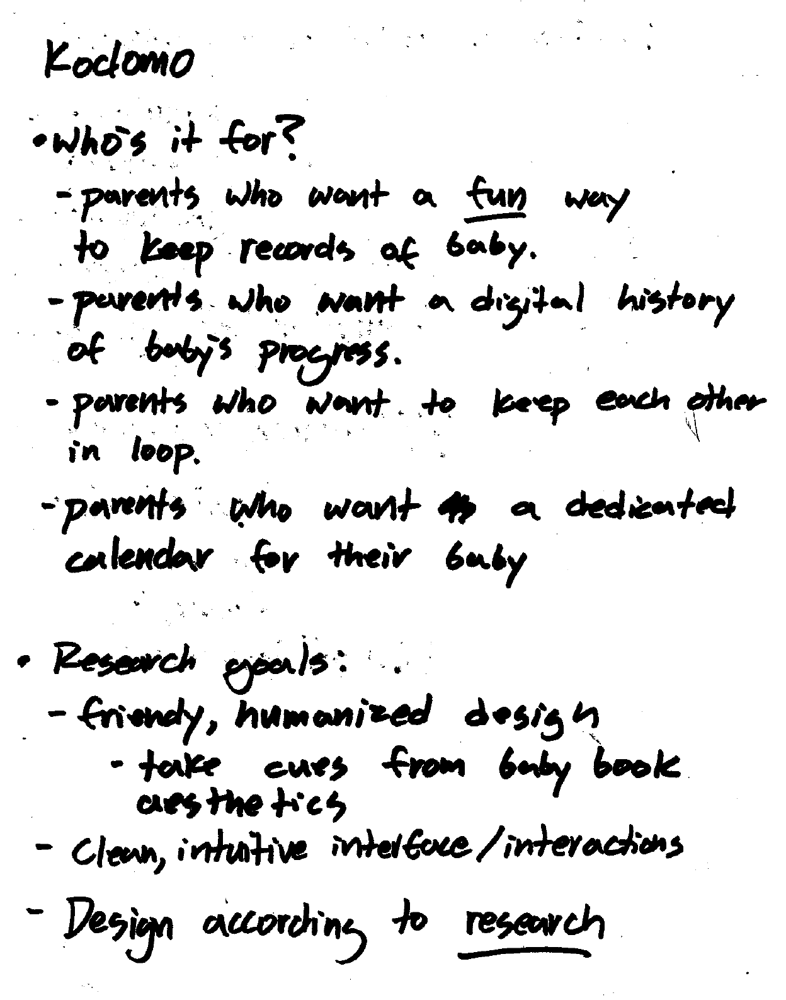
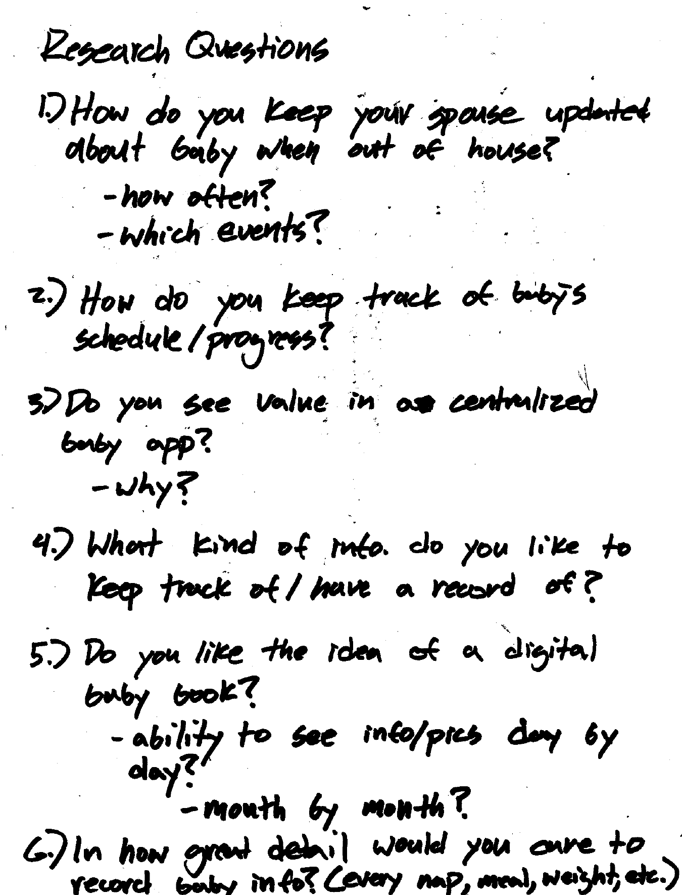
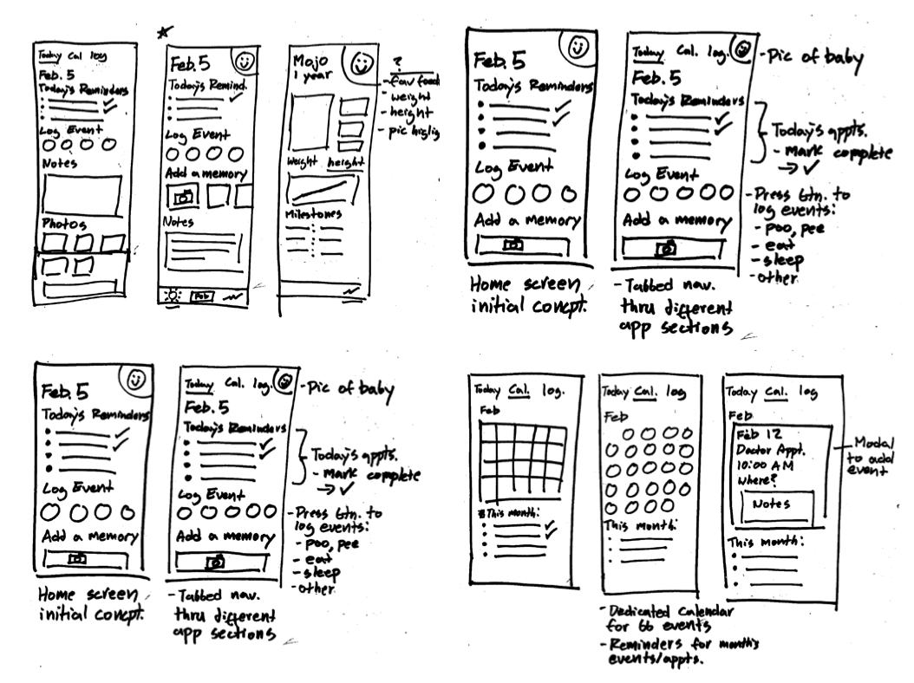
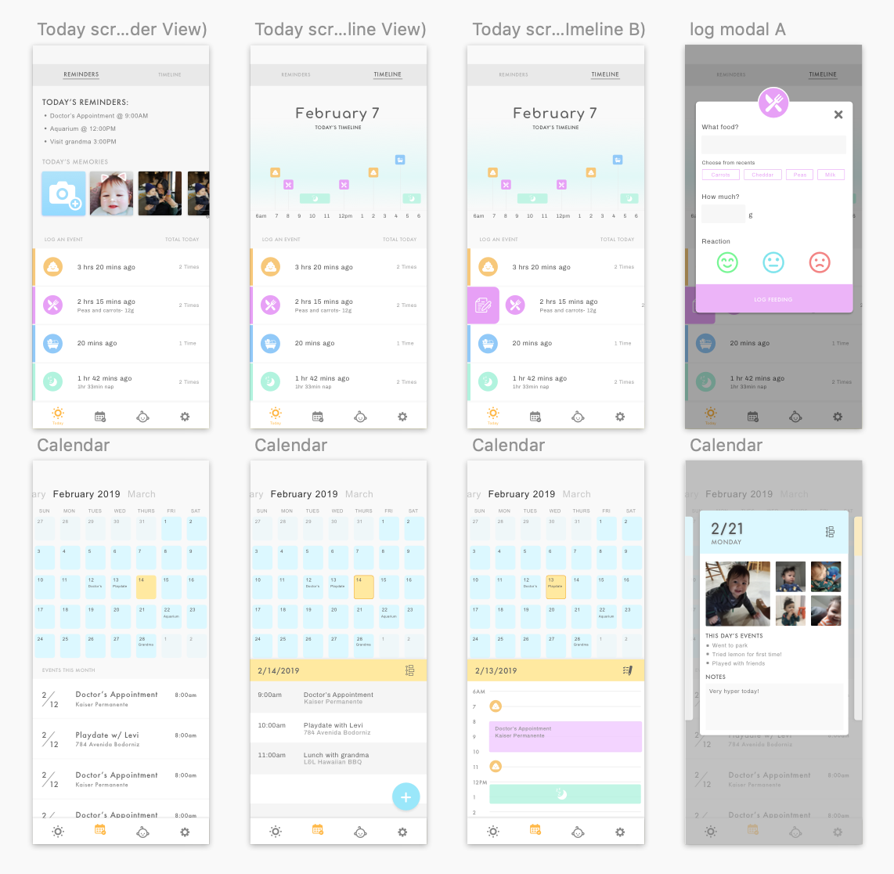

Kodomo Baby App
UX/UI Case Study
My Role: Research, Planning, Wireframing, Testing, High Fidelity Prototyping
Tools Used: Sketch, Principle, Pen & paper

The Problem
Raising a baby is a challenging, but rewarding experience for parents to undergo. It can be hectic keeping track of a baby’s diet, health, and appointments. Another inherent challenge many couples also face is keeping a spouse who works most of the day up to date on how the baby is doing.
Proposed Solution
My app concept aims to provide new parents with an intuitive and friendly tool which they can use in order to:
- Keep track of baby’s daily activities
- Keep track of baby’s overall development
- Keep working spouse up to date throughout the day
The app will allow both parents to access and log information about their baby freely. It is a shared experience between the two.
- Keep track of baby’s daily activities
- Keep track of baby’s overall development
- Keep working spouse up to date throughout the day
The app will allow both parents to access and log information about their baby freely. It is a shared experience between the two.
Research & Planning
I began my research by seeking out some new parents to interview. I interviewed several couples with babies in order to understand better the type of information that they would find value in keeping track of. I was able to come away from my interviews with a solid plan of attack for what my app concept should focus on in terms of features and presented information.


Paper Sketches

My design process begins with rough paper sketches and iterations based on the information I gathered through my research. My initial paper sketches included layouts for an event logging function, calendar function, as well as a baby profile of some sorts.
Later on into the project my focus would shift more towards the event logging function. The reason for this is that I would realize that a calendar feature within my app would have trouble differentiating itself from a user’s default calendar app. The use of it would feel redundant and therefore unecessary in my product. I decided to focus on the feature which was most unique to my app concept.
Visual Design

I wanted the design to be clean, focused, and modern. I also wanted the design to make use of bright pastel colors to denote the baby theme of the app. It was important not to overuse these bright colors, as overuse could lead to a gaudy looking end product. I opted to use these colors sparingly against a clean backdrop of whites and light greys. This design choice contributed to a clean look that leads the user's attention towards the main functionalities of the application.
Interaction Design

I designed these interaction animations within Principle. This sequence demonstrates the event logging functionality of the app. It makes use of modern micro-interaction designs such as slide out tab buttons. Smooth transitions and interactions lead to a more charming user experience.
For the Future
I think that this is my most polished, modern looking end product to date. I look forward to making more designs in the future which make use of modern design and interaction cues in order to make products that are current but also uniquely my own.
Back to Top